Shadows
Brightness and brilliance
limited Objects
Reflections
Transparency / modification shadows
Direct Light
Objects compounds
Disturbances / textures
Various: negative objects, ambient light
Shadows
Brightness and brilliance
limited Objects
Reflections
Transparency / modification shadows
Direct Light
Objects compounds
Disturbances / textures
Various: negative objects, ambient light


84
 Raytracing technique allowed us to far
Raytracing technique allowed us to far
- we move into our space
- placing objects in a random position
- to find for a given pixel, which object crosses our eyes.
Our images are unrealistic for the moment. Indeed, the
color of the object is simply passed to the pixel in question.
The shadow techniques, brightness and brilliance will only
act on the color of the object in order to achieve the desired effects.
This step then goes after determined the
parameters of the intersection ray / object.


85
 Light sources will come into play. Let's start with
Light sources will come into play. Let's start with
a spotlight 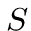placed 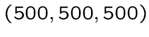.
This spot lights in all directions.
In which case he has a shadow-y? When an object is
located between the spot and the object you look.
A pixel given the principle of ray-tracing we
can associate to a point on the object (the intersection
between the object and our right vision). We then get
a single line through the point and spot.
Right-object intersection, it reminds you something?
This is to retain THAT intersections that
are between our object and spot .

 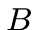
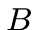


86
 So we can write the parametric equation of the
So we can write the parametric equation of the
line between and  :
with the direction vector
It is then to test the intersection between this line
and all the objects in our space (just like the right
vision). Please note that only values such as
are interresting: beyond , it is after
the spot, and before it is behind the point .
If there is no shade, the color of the object is used . In
the contrary case, use is a black or very close color.
:
with the direction vector
It is then to test the intersection between this line
and all the objects in our space (just like the right
vision). Please note that only values such as
are interresting: beyond , it is after
the spot, and before it is behind the point .
If there is no shade, the color of the object is used . In
the contrary case, use is a black or very close color.
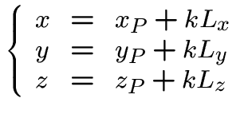


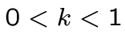


88
 This is to visually highlight the parts
This is to visually highlight the parts
more informed of the object: a point is more `` face 'to the spot,
the more the intensity of the color will be.
This technique requires knowing a vector normal
to subject to the point of intersection (a vector perpendicular
to the plane tangent to the object at the point of intersection).
It re-uses the vector between the intersection point and
the spot.
More vectors are `near ' plus the point will be illuminated.
This results in the angle between the vectors and .
The greater the angle , the smaller the dot is bright.
 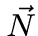
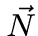


89
 This calculation is done using the dot product of two vectors
.
Of course .
is found. Over the cosine value is close
, the larger the angle is near . When the cosine is
negative, the point `` look '' not the light and will therefore be
black (as if it was in the shade).
For values between and , the cosine will serve as a
multiplier of the three RGB components the color
of the object. Eg:
This calculation is done using the dot product of two vectors
.
Of course .
is found. Over the cosine value is close
, the larger the angle is near . When the cosine is
negative, the point `` look '' not the light and will therefore be
black (as if it was in the shade).
For values between and , the cosine will serve as a
multiplier of the three RGB components the color
of the object. Eg:

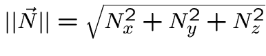


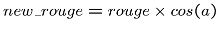
91
 The normal vector at the intersection point is first
The normal vector at the intersection point is first
determined in the single position of the object, and then
converts back to its true coordinates, with the rotation and
the translation.
We call the point of intersection in the simple position
of the object.
For the sphere, the vector is suitable as a normal vector .
In the plan, as our object is simply the horizontal plane
, the vector is appropriate, regardless of the point of intersection.


 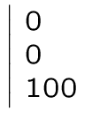
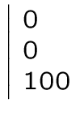
92
 For the cylinder
to the cone equation :
Warning: As for the point , you will calculate
the coordinates single position of the object.
REMEMBER to convert these coordinates actual position
of the object. If not, and
will be completely wrong.
93
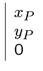
For the cylinder
to the cone equation :
Warning: As for the point , you will calculate
the coordinates single position of the object.
REMEMBER to convert these coordinates actual position
of the object. If not, and
will be completely wrong.
93
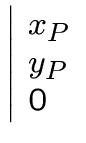


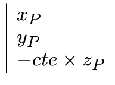


 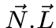
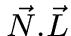
 The brightness of the object will intervene along
The brightness of the object will intervene along
the brightness.
The principle is that the more a surface is bright,
over the final color will depend on the spot (a spot
. color traumatized person I hope)
The concept of gloss will concretely expressed by
a constant between and specific to each object.
One can formulas is:
The always present: one face to the shadow that
shines, it's a mess!


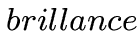


94
 Caution: for many colors calculations brightness
Caution: for many colors calculations brightness
. transparency, reflection, ... formulas are far from unique
If other proportions, other way to mix
colors look more realistic, please to the
use !!
For example: in the brightness of formula is not taken into
account the power of light. If the light is
low, the object will appear to be less informed.
Thus our color will decrease in proportion to
the intensity of the color of the spot:
with the greatest possible value for the
red component.


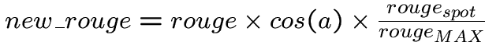
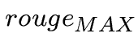
95
 How when you have several spots?
How when you have several spots?
Again, you can choose your formula.
The easiest way is to add the components of different
color obtained for each spot.
In order to stay in reasonable levels of color,
you can then divide the total by the number of spots.
Another solution to integrate your formulas intensity
spots for the final color is not completely
saturated (usually it gives the white).
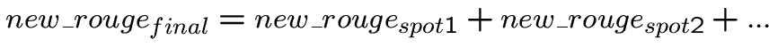

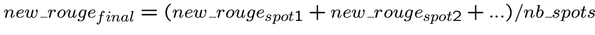

96